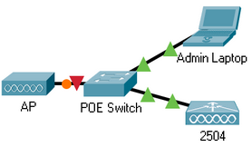

Cisco 2400 series WLCs on a blank configuration force the user into an initial configuration dialog on boot. To allow for simplicity and ease of use of these controllers in a Cisco Networking Academy lab environment, a default bare-bones configuration is required. This configuration specifies the management IP and subnet mask, management interface, and management VLAN tag. I made this configuration as a bear-bones configuration to be install on around 15 2504 WLCs which are to be used by students in a Cisco Lab.
WLC Configuration Details
AireOS Image: 8.2.166.0
Management IP: 192.168.0.254/24
Management Interface: Ethernet 1
Management VLAN tag: 99
Administrative username: cisco
Administrative password: P@ssword
Additional WLC Commands
ap cert-expiry-ignore mic enable
ap cert-expiry-ignore ssc enable
These commands instruct the WLC to ignore the expired certificate on EOL Access Points, allowing for the successful forming of a CAPWAP protocol connection. This is not something that should be enabled in a production environment, only in an air-gaped lab for educational purposes.
The time also needs to be configured, however that is not saved in the configuration file but instead on an RTC chip powered by an internal CMOS battery. This means the time must be set on each individual device.
Example topology configuration details:

The physical topology diagram, illustrated in the above image, shows the recommended minimum hardware and connections required in order to configure a WLC and have a wireless networking broadcasted. While a POE switch is not strictly required, without it the access point must be provided with an external power supply.
Switch Configuration:
The switch in which all devices are connected, while not needing much configuration, must support trunking on the interface connected to the WLC, as well as placing the Admin PC interface and the AP interface in the management VLAN access group. I have configured the management VLAN as VLAN99.
Admin PC:
The administrative PC must be assigned an IP address in the 192.168.0.0/24 subnet, excluding 192.168.0.254 which is assigned to the WLC. The WLC is configured using a web browser and the HTTPS protocol (https://192.168.0.254).
On the GitHub page for this protect I have included an example lab for a Cisco Networking Academy Class, which includes all the required instructions to get a wireless network up and running.